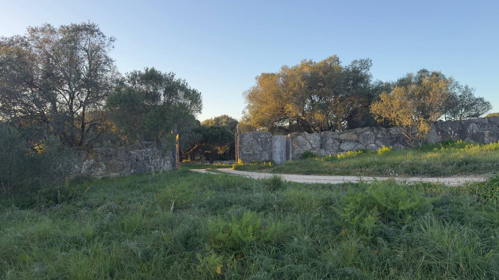
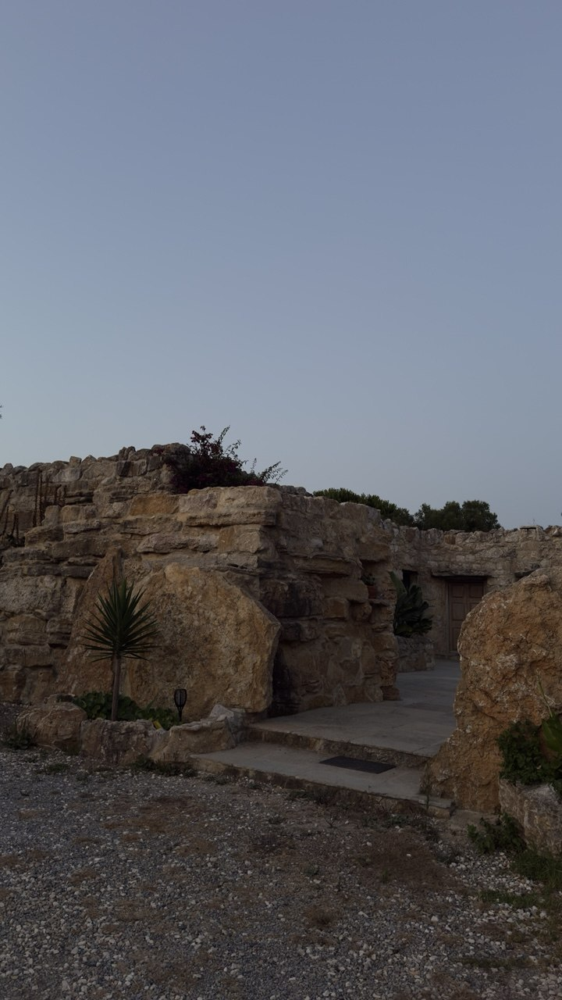
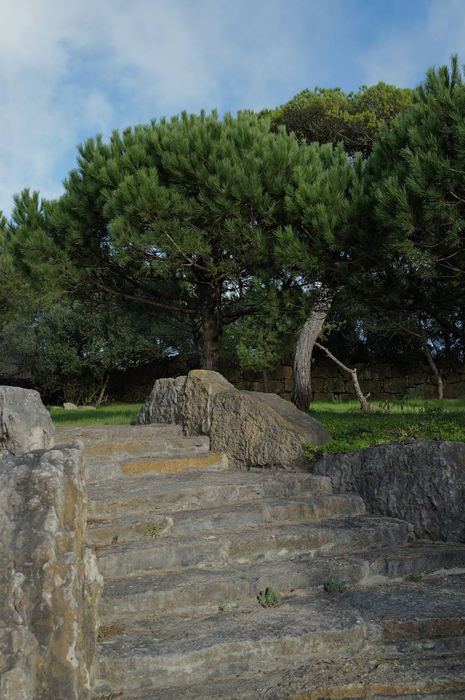
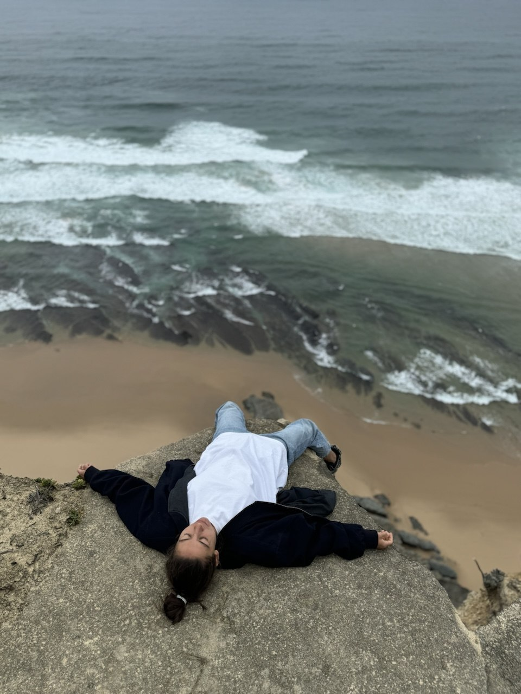
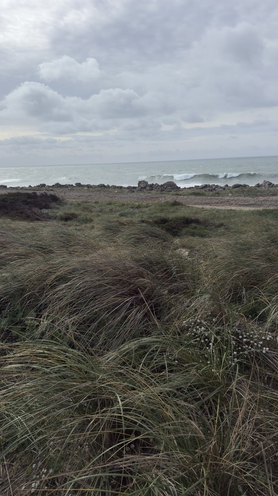
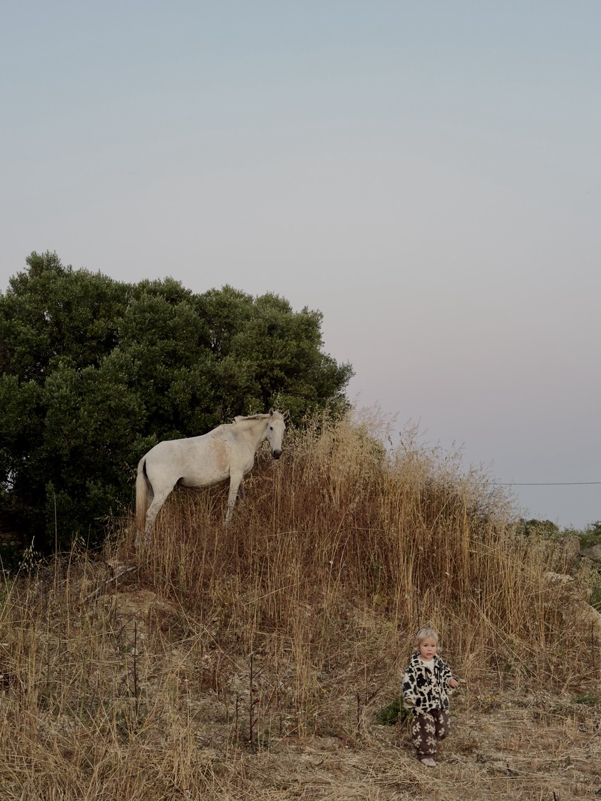
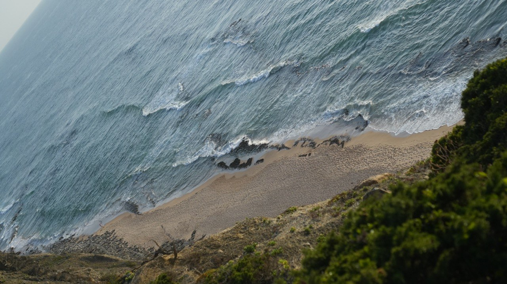
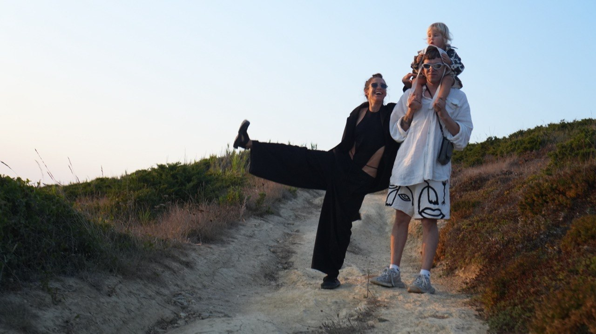

Remember yourself on the crest of a wave — when everything falls into place by itself, with no effort and no struggle?
That is synchronicity. Your natural frequency.
The age of play has arrived. The world is entering a post-labour economy: logic, analysis and routine are taken over by AI. What remains is what can't be digitised — creativity, play, living energy. Bringing them back in yourself is the main task now. And, perhaps, the most pleasant one.
Sonora is about exactly that. Resonant, ringing clear, without noise. A return to your original frequency — to yourself: playing, creating, alive.

The Atlantic · SintraYou probably have no request for this. And the convenient moment will never come. It's frightening. Most likely painful. But only this way can you feel that the skin was never yours — and begin to live in your own nature, without the self-violence you've called "normal" since the age of two.
Recognise yourself?
This is how 98% of people over 25 live (NASA creativity research). Every fracture steals energy — your vitality, health, youth, and that childhood delight no adult achievement can ever bring back.
Three beings live inside you. When you were around two years old, they were turned into enemies — and ever since they've been at war, destroying one another.
Classic methods touch one, at most two — that's why it all rolls back:
The three can only be reconciled at the foundational level — in Consciousness. Find the point of failure and synchronise them all. But first you'll have to die. Metaphysically — though this passage feels more real than a funeral.

as if the whole world were on your side
The indicator that it worked is synchronicity. Your psycho-emotional state determines how attuned you are to your environment — and with it your health, money, relationships, fulfilment. When you're in resonance, the world arranges itself on your side.
On average, 3–4 personal sessions with us are enough to change a life and settle into one's own nature. We call it restoring your inner Dao.
And in four days inside a shared field of synergy you release what has weighed on you, perhaps your whole "conscious" life. Co— means together: the clean air of a collective field, where you suddenly realise you've been breathing poison all your life. Here personal experience amplifies geometrically.
Sonora has a common leitmotif — a return to your frequency: sonority, manifestation, and the unfolding of your genius creativity and uniqueness.
And there is the individual part. We work through each participant's personal request — and the retreat is assembled around it. Not generic practices for everyone, but work with all three parts of Consciousness, built around what matters to you.
Working with Liza is unique in its blend of meta-rationalism and hypersensitivity. She reads information from the field with astonishing precision and finds the root point of failure. One personal practice radically changes a life.
The cause of every block is fear. But fear is no enemy — it's a fuse set by the mind. We remove the defences and rewrite the suppressed experience as a resource — and the need for fear dissolves.
Technological ceremonies — a play of light, sound and imagination. Vlad draws on 15 years in the world's top video industry to direct the living-through of transformation at the level of the body. The body remembers everything — your most stable support when returning to ordinary life.

Ocean · cliffs · nature reserveFounders of 137 Lab. For the past 3.5 years we've been researching how people interact at the level of collective consciousness — and translating it into living experience.

Vlad & Liza · SintraPhilosopher, visionary, psychonaut and innovator at the intersection of spirituality, science, technology and creativity. I treat inspiration as a technology, and unlocking creative potential in people is my passion. 15 years in the world's top video industry: at Sonora I turn transformation into a living-through at the level of the body — light, sound, ceremony.
I work with consciousness as a meta-system: studying its architecture and translating spirituality and magic into precise science. I can solve any person's problem, in any field and at any complexity — working at the layers where Consciousness creates reality. On one condition: that the person is ready for transformation.
The evolution of consciousness, as we see it, is a game played with irony. No dogma, no meditation, yoga or asceticism — only the scientific perspective, applied as technology. And a transformational experience in an intimate circle.
A villa on the closed grounds of a nature reserve, far from everything. Stone dug from this very land; wood and non-toxic materials; antiques from Asia and India, 600–700 years old. Its own well water. Silence. Not a single car — only the ocean, the pines and the dry light of Sintra.
50 minutes to Lisbon · 20 minutes to Sintra · 15 minutes to the ocean.



Children (1–2) welcome — by arrangement. Optionally, 2–3 more days of deeper individual work after the retreat.
The name came on its own. We didn't choose it.
The "sonorants" — the voiced M, N, L, R — are sounds where the air meets no obstacle and stays clear. This root is four thousand years old. Sonora is about a return to the original, clear sound: to live in your nature, to trust yourself, to ring at full volume. When the inner vibration finally becomes visible on the outside.
There are only six places, and Victoria will reach out to you on Telegram. Leave your name and your Telegram — and, if you wish, a few words about what you'd like to come with.